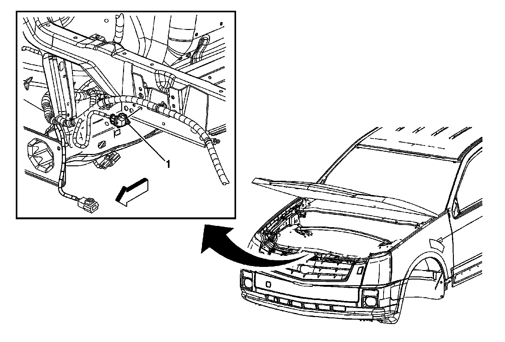
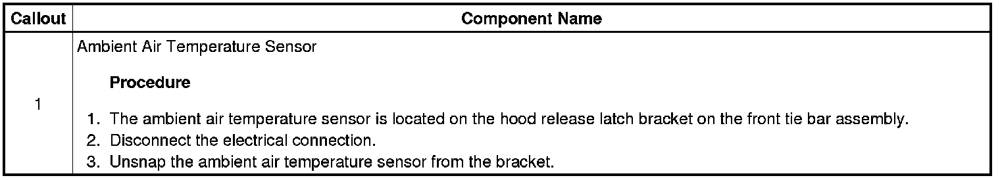

Operation CHARM
: Car repair manuals for everyone.
Home
>>
Cadillac
>>
2008
>>
SRX AWD V8-4.6L
>>
Repair and Diagnosis
>>
Instrument Panel, Gauges and Warning Indicators
>>
Outside Temperature Display
>>
Outside Temperature Display Sensor
>>
Service and Repair
Outside Temperature Display Sensor: Service and Repair
Ambient Air Temperature Sensor Replacement

